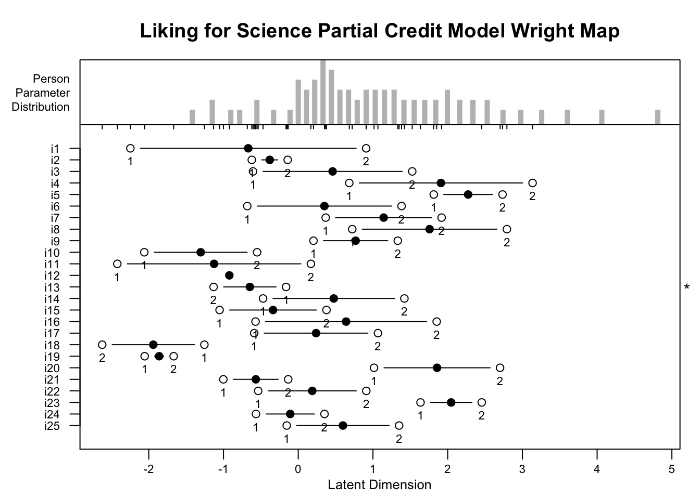
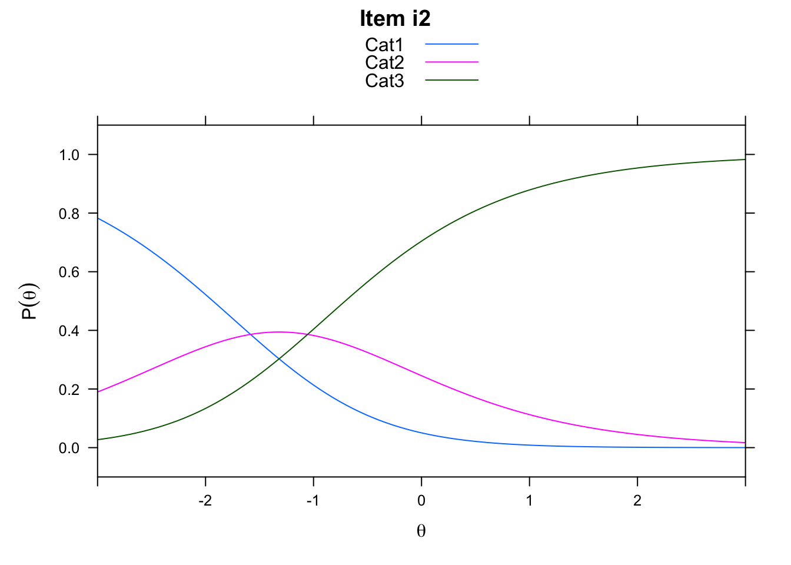
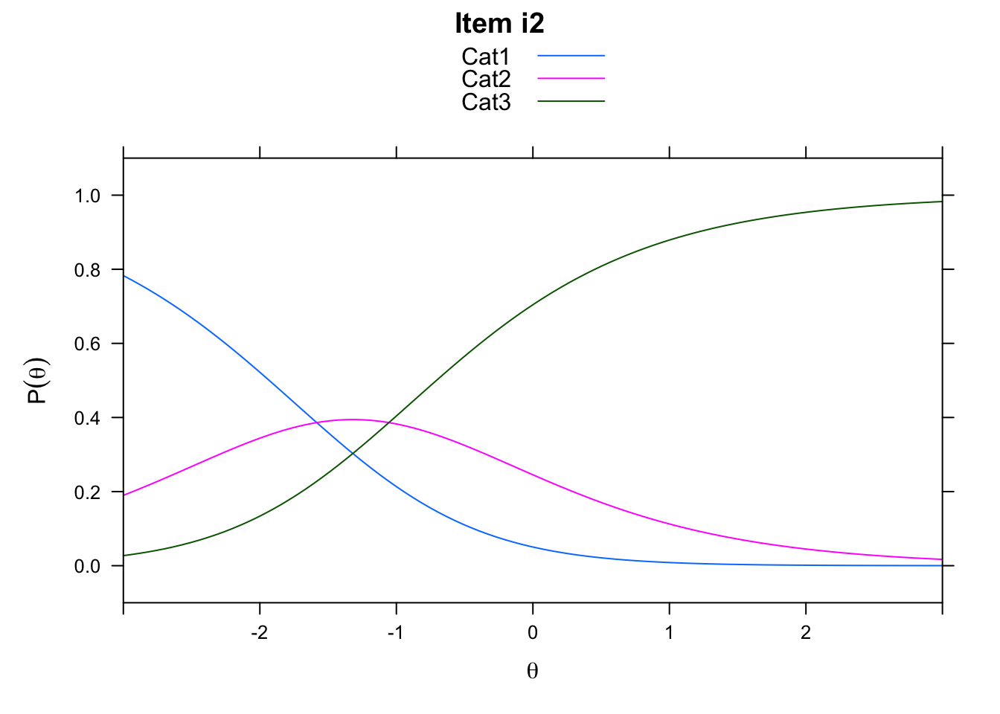

Chapter 5 Partial Credit Model
This chapter provides a basic overview of the Partial Credit Model (PCM) (Masters 1982), along with guidance for analyzing data with the PCM using R (R Core Team 2019). We use the same example data set from Chapter 4 of this book that includes participant responses to an attitude survey about science activities to illustrate the analysis using Conditional Maximum Likelihood Estimation (CMLE) via the eRm package (Mair, Hatzinger, and Maier 2021). We also demonstrate PCM analyses using Marginal Maximum Likelihood Estimation (MMLE) and Joint Maximum Likelihood Estimation (JMLE) via the TAM package (Robitzsch, Kiefer, and Wu 2021). After the analyses are complete, we present an example description of the results. The chapter concludes with a challenge exercise.
Overview of the Partial Credit Model
Masters (1982) proposed the PCM as a generalization of the dichotomous Rasch model (see Chapter 2) for use with ordinal item responses that are scored in more than two categories (e.g., data from attitude scales or performance assessments). Similar to the Rating Scale Model [RSM; Andrich (1978); see Chapter 4), the PCM provides estimates of person locations, item locations, and rating scale category thresholds on a log-odds scale that represents the latent variable. However, whereas the RSM provides one set of rating scale category thresholds that are estimated using all item responses, the PCM provides separate rating scale category thresholds for each item included in the analysis. Item-specific thresholds are useful in many practical situations, including instruments that include multiple scale lengths and cases where some rating scale categories are not observed in responses to one or more items. In addition, the PCM is useful in contexts where it is important to verify comparable rating scale functioning across items, and to evaluate the measurement quality of rating scales specific to individual items.
The PCM can be stated in log-odds form as follows:
\[\begin{equation}\tag{5.1}ln\left[\frac{P_{n_i(xi=k)}}{P_{n_i(xi=k-1)}}\right]=\theta_{n}-\delta_{i}-\tau_{ik}\end{equation}\]
In the PCM, \(\theta\) is the person’s ability, \(\delta\) is the item’s difficulty, and \(\tau_ik\) is the rating scale category threshold specific to item i. As in the RSM, the threshold is the location on the logit scale at which there is an equal probability for a rating in category k and category k - 1. For a rating scale made up of m categories, there are m - 1 rating scale category thresholds. Thresholds(\(τ_{k}\)) are estimated empirically for each element of one facet, such as items. They are not necessarily evenly spaced or ordered as expected. In contrast to the RSM, the location and relative distance between thresholds is estimated separately for each item.
Rasch Model Requirements
The PCM is based on the same requirements of unidimensionality, local independence, and invariance that we discussed in Chapter 2 for the dichotomous Rasch model. In practice, researchers should evaluate item responses for evidence that they approximate Rasch model requirements before examining model estimates in detail. Chapter 3 included details about model-data fit analysis procedures that can also be applied to the PCM. In the current chapter, we provide code for calculating some popular residual-based fit indices for items and persons based on the PCM. In addition, we encourage readers to use rating scale analysis techniques to consider additional issues related to rating scale functioning with the PCM; we discuss these methods in detail in Chapter 8.
5.1 Example Data: Liking for Science
The example data set for this chapter is the same data set that we used in Chapter 4 of this book. The data include a group of 75 children’s responses to the 25-item Liking for Science questionnaire, which was designed to measure their attitudes toward science activities. The data were originally published in Wright and Masters (1982). Each item stem included a science activity, and three response options: 0 = Dislike, 1 = Not Sure/Don’t Care, and 2 = Like, such that responses in higher categories indicated more-favorable attitudes toward science activities.
5.2 PCM Analysis with CMLE in eRm
In the next section, we provide a step-by-step demonstration of a PCM analysis with Conditional Maximum Likelihood Estimation (CMLE) using the eRm package in R. We encourage readers to use the example data set that is provided in the online supplement to conduct the analysis along with us.
Prepare for the Analyses
We will use the Extended Rasch Modeling, or eRm package (Mair, Hatzinger, and Maier 2021) as the first package with which we demonstrate PCM analyses. We selected eRm for the first illustrations in the current chapter because it includes functions for applying the PCM that are relatively straightforward to use and interpret. Please note that the eRm package uses the Conditional Maximum Likelihood Estimation (CMLE) method to estimate Rasch model parameters. As a result, estimates from the eRm package are not directly comparable to estimates obtained using other estimation methods. At the end of this chapter, we have included an illustration of RSM analyses with the Test Analysis Modules or TAM package (Robitzsch, Kiefer, and Wu 2021) with Marginal Maximum Likelihood Estimation (MMLE). We also provide an illustration with TAM using Joint Maximum Likelihood Estimation (JMLE), which produces comparable estimates to some popular standalone Rasch software programs, such as John Michael Linacre (2020a) and John Michael Linacre (2020b).
citation("eRm")
# install.packages("eRm")
#install.packages("eRm")
library("eRm")Now that we have installed and loaded the packages to our R session, we are ready to import the data. We will use the function read.csv() to import the comma-separated values (.csv) file that contains the Liking for Science survey data. We encourage readers to use their preferred method for importing data files into R or R Studio.
Please note that if you use read.csv() to import the data, you will need to specify the file path to the location at which the data file is stored on your computer or set your working directory to the folder in which you have saved the data.
First, we will import the data using read.csv() and store it in an object called science:
science <- read.csv("liking_for_science.csv")Next, we will explore the data using descriptive statistics using the summary() function:
summary(science)## student i1 i2 i3
## Min. : 1.0 Min. :0.000 Min. :0.000 Min. :0.000
## 1st Qu.:19.5 1st Qu.:1.000 1st Qu.:1.000 1st Qu.:1.000
## Median :38.0 Median :1.000 Median :2.000 Median :1.000
## Mean :38.0 Mean :1.453 Mean :1.547 Mean :1.173
## 3rd Qu.:56.5 3rd Qu.:2.000 3rd Qu.:2.000 3rd Qu.:2.000
## Max. :75.0 Max. :2.000 Max. :2.000 Max. :2.000
## i4 i5 i6 i7
## Min. :0.0000 Min. :0.0000 Min. :0.000 Min. :0.00
## 1st Qu.:0.0000 1st Qu.:0.0000 1st Qu.:1.000 1st Qu.:0.00
## Median :1.0000 Median :0.0000 Median :1.000 Median :1.00
## Mean :0.6933 Mean :0.4933 Mean :1.213 Mean :0.92
## 3rd Qu.:1.0000 3rd Qu.:1.0000 3rd Qu.:2.000 3rd Qu.:1.50
## Max. :2.0000 Max. :2.0000 Max. :2.000 Max. :2.00
## i8 i9 i10 i11 i12
## Min. :0.00 Min. :0.000 Min. :0.000 Min. :0.000 Min. :1.000
## 1st Qu.:0.00 1st Qu.:0.000 1st Qu.:2.000 1st Qu.:1.000 1st Qu.:2.000
## Median :1.00 Median :1.000 Median :2.000 Median :2.000 Median :2.000
## Mean :0.72 Mean :1.067 Mean :1.733 Mean :1.613 Mean :1.827
## 3rd Qu.:1.00 3rd Qu.:2.000 3rd Qu.:2.000 3rd Qu.:2.000 3rd Qu.:2.000
## Max. :2.00 Max. :2.000 Max. :2.000 Max. :2.000 Max. :2.000
## i13 i14 i15 i16 i17
## Min. :0.000 Min. :0.000 Min. :0.00 Min. :0.000 Min. :0.000
## 1st Qu.:2.000 1st Qu.:1.000 1st Qu.:1.00 1st Qu.:1.000 1st Qu.:1.000
## Median :2.000 Median :1.000 Median :2.00 Median :1.000 Median :1.000
## Mean :1.693 Mean :1.173 Mean :1.48 Mean :1.107 Mean :1.267
## 3rd Qu.:2.000 3rd Qu.:2.000 3rd Qu.:2.00 3rd Qu.:2.000 3rd Qu.:2.000
## Max. :2.000 Max. :2.000 Max. :2.00 Max. :2.000 Max. :2.000
## i18 i19 i20 i21
## Min. :0.000 Min. :0.00 Min. :0.0000 Min. :0.000
## 1st Qu.:2.000 1st Qu.:2.00 1st Qu.:0.0000 1st Qu.:1.000
## Median :2.000 Median :2.00 Median :1.0000 Median :2.000
## Mean :1.933 Mean :1.88 Mean :0.6667 Mean :1.587
## 3rd Qu.:2.000 3rd Qu.:2.00 3rd Qu.:1.0000 3rd Qu.:2.000
## Max. :2.000 Max. :2.00 Max. :2.0000 Max. :2.000
## i22 i23 i24 i25
## Min. :0.000 Min. :0.00 Min. :0.000 Min. :0.000
## 1st Qu.:1.000 1st Qu.:0.00 1st Qu.:1.000 1st Qu.:1.000
## Median :1.000 Median :0.00 Median :2.000 Median :1.000
## Mean :1.293 Mean :0.56 Mean :1.427 Mean :1.133
## 3rd Qu.:2.000 3rd Qu.:1.00 3rd Qu.:2.000 3rd Qu.:2.000
## Max. :2.000 Max. :2.00 Max. :2.000 Max. :2.000From the summary of science, we can see there are no missing data. We can also get a general sense of the scales, range, and distribution of each variable in the data set.
We can see that Student ID numbers range from 1 to 75, and that the maximum rating on the items was x=2. Importantly, we can see that for Item 12, the minimum rating was x=1, and no ratings in the first category (x=0) were observed in our sample. In contrast to the RSM analysis in Chapter 4, we can include this item in our analysis with the PCM because the PCM estimates rating scale category thresholds separately for each item.
Run the Partial Credit Model
Next we need to isolate the item response matrix from the descriptive variables in the data (in this case, student IDs). To do this, we will create an object made up of only the item responses by removing the first variable (student) from the data.
science.responses <- subset(science, select = -student)We will use the summary() function to calculate descriptive statistics for the science.responses object to check our work and ensure that the responses are ready for analysis.
summary(science.responses)## i1 i2 i3 i4
## Min. :0.000 Min. :0.000 Min. :0.000 Min. :0.0000
## 1st Qu.:1.000 1st Qu.:1.000 1st Qu.:1.000 1st Qu.:0.0000
## Median :1.000 Median :2.000 Median :1.000 Median :1.0000
## Mean :1.453 Mean :1.547 Mean :1.173 Mean :0.6933
## 3rd Qu.:2.000 3rd Qu.:2.000 3rd Qu.:2.000 3rd Qu.:1.0000
## Max. :2.000 Max. :2.000 Max. :2.000 Max. :2.0000
## i5 i6 i7 i8 i9
## Min. :0.0000 Min. :0.000 Min. :0.00 Min. :0.00 Min. :0.000
## 1st Qu.:0.0000 1st Qu.:1.000 1st Qu.:0.00 1st Qu.:0.00 1st Qu.:0.000
## Median :0.0000 Median :1.000 Median :1.00 Median :1.00 Median :1.000
## Mean :0.4933 Mean :1.213 Mean :0.92 Mean :0.72 Mean :1.067
## 3rd Qu.:1.0000 3rd Qu.:2.000 3rd Qu.:1.50 3rd Qu.:1.00 3rd Qu.:2.000
## Max. :2.0000 Max. :2.000 Max. :2.00 Max. :2.00 Max. :2.000
## i10 i11 i12 i13
## Min. :0.000 Min. :0.000 Min. :1.000 Min. :0.000
## 1st Qu.:2.000 1st Qu.:1.000 1st Qu.:2.000 1st Qu.:2.000
## Median :2.000 Median :2.000 Median :2.000 Median :2.000
## Mean :1.733 Mean :1.613 Mean :1.827 Mean :1.693
## 3rd Qu.:2.000 3rd Qu.:2.000 3rd Qu.:2.000 3rd Qu.:2.000
## Max. :2.000 Max. :2.000 Max. :2.000 Max. :2.000
## i14 i15 i16 i17 i18
## Min. :0.000 Min. :0.00 Min. :0.000 Min. :0.000 Min. :0.000
## 1st Qu.:1.000 1st Qu.:1.00 1st Qu.:1.000 1st Qu.:1.000 1st Qu.:2.000
## Median :1.000 Median :2.00 Median :1.000 Median :1.000 Median :2.000
## Mean :1.173 Mean :1.48 Mean :1.107 Mean :1.267 Mean :1.933
## 3rd Qu.:2.000 3rd Qu.:2.00 3rd Qu.:2.000 3rd Qu.:2.000 3rd Qu.:2.000
## Max. :2.000 Max. :2.00 Max. :2.000 Max. :2.000 Max. :2.000
## i19 i20 i21 i22 i23
## Min. :0.00 Min. :0.0000 Min. :0.000 Min. :0.000 Min. :0.00
## 1st Qu.:2.00 1st Qu.:0.0000 1st Qu.:1.000 1st Qu.:1.000 1st Qu.:0.00
## Median :2.00 Median :1.0000 Median :2.000 Median :1.000 Median :0.00
## Mean :1.88 Mean :0.6667 Mean :1.587 Mean :1.293 Mean :0.56
## 3rd Qu.:2.00 3rd Qu.:1.0000 3rd Qu.:2.000 3rd Qu.:2.000 3rd Qu.:1.00
## Max. :2.00 Max. :2.0000 Max. :2.000 Max. :2.000 Max. :2.00
## i24 i25
## Min. :0.000 Min. :0.000
## 1st Qu.:1.000 1st Qu.:1.000
## Median :2.000 Median :1.000
## Mean :1.427 Mean :1.133
## 3rd Qu.:2.000 3rd Qu.:2.000
## Max. :2.000 Max. :2.000Now we are ready to run the PCM on the Liking for Science response data. We will use the PCM() function to run the model and store the results in an object called PCM.science.
PCM.science <- PCM(science.responses, se = TRUE)## Warning:
## The following items have no 0-responses:
## i12
## Responses are shifted such that lowest category is 0.Overall Model Summary
We will request a summary of the model results using the summary() function.
summary(PCM.science)##
## Results of PCM estimation:
##
## Call: PCM(X = science.responses, se = TRUE)
##
## Conditional log-likelihood: -1165.791
## Number of iterations: 148
## Number of parameters: 48
##
## Item (Category) Difficulty Parameters (eta): with 0.95 CI:
## Estimate Std. Error lower CI upper CI
## i1.c2 -1.338 0.616 -2.546 -0.130
## i2.c1 -0.622 0.438 -1.480 0.237
## i2.c2 -0.763 0.432 -1.610 0.084
## i3.c1 -0.605 0.338 -1.268 0.058
## i3.c2 0.920 0.404 0.128 1.712
## i4.c1 0.683 0.270 0.155 1.212
## i4.c2 3.819 0.484 2.870 4.769
## i5.c1 1.813 0.297 1.232 2.395
## i5.c2 4.548 0.495 3.578 5.517
## i6.c1 -0.682 0.349 -1.366 0.001
## i6.c2 0.701 0.407 -0.096 1.497
## i7.c1 0.367 0.288 -0.196 0.931
## i7.c2 2.286 0.392 1.519 3.054
## i8.c1 0.723 0.273 0.188 1.257
## i8.c2 3.515 0.453 2.627 4.403
## i9.c1 0.204 0.305 -0.395 0.802
## i9.c2 1.536 0.372 0.808 2.265
## i10.c1 -2.060 0.748 -3.525 -0.594
## i10.c2 -2.610 0.727 -4.034 -1.186
## i11.c1 -2.421 0.731 -3.854 -0.989
## i11.c2 -2.252 0.725 -3.673 -0.831
## i12.c1 -0.922 0.327 -1.562 -0.281
## i13.c1 -0.163 0.517 -1.176 0.850
## i13.c2 -1.295 0.454 -2.184 -0.406
## i14.c1 -0.471 0.333 -1.123 0.182
## i14.c2 0.950 0.396 0.175 1.725
## i15.c1 -1.052 0.439 -1.913 -0.192
## i15.c2 -0.675 0.453 -1.562 0.213
## i16.c1 -0.571 0.327 -1.212 0.070
## i16.c2 1.281 0.410 0.478 2.085
## i17.c1 -0.589 0.354 -1.283 0.105
## i17.c2 0.478 0.399 -0.304 1.260
## i18.c1 -1.256 1.140 -3.491 0.979
## i18.c2 -3.879 0.993 -5.825 -1.933
## i19.c1 -2.055 1.056 -4.124 0.014
## i19.c2 -3.722 0.991 -5.665 -1.780
## i20.c1 1.014 0.275 0.475 1.554
## i20.c2 3.716 0.454 2.827 4.604
## i21.c1 -1.002 0.479 -1.941 -0.062
## i21.c2 -1.136 0.475 -2.067 -0.205
## i22.c1 -0.536 0.357 -1.237 0.165
## i22.c2 0.375 0.396 -0.401 1.151
## i23.c1 1.636 0.293 1.062 2.211
## i23.c2 4.092 0.458 3.194 4.990
## i24.c1 -0.565 0.392 -1.334 0.204
## i24.c2 -0.214 0.407 -1.011 0.584
## i25.c1 -0.154 0.318 -0.777 0.469
## i25.c2 1.196 0.381 0.449 1.943
##
## Item Easiness Parameters (beta) with 0.95 CI:
## Estimate Std. Error lower CI upper CI
## beta i1.c1 2.246 0.602 1.067 3.426
## beta i1.c2 1.338 0.616 0.130 2.546
## beta i2.c1 0.622 0.438 -0.237 1.480
## beta i2.c2 0.763 0.432 -0.084 1.610
## beta i3.c1 0.605 0.338 -0.058 1.268
## beta i3.c2 -0.920 0.404 -1.712 -0.128
## beta i4.c1 -0.683 0.270 -1.212 -0.155
## beta i4.c2 -3.819 0.484 -4.769 -2.870
## beta i5.c1 -1.813 0.297 -2.395 -1.232
## beta i5.c2 -4.548 0.495 -5.517 -3.578
## beta i6.c1 0.682 0.349 -0.001 1.366
## beta i6.c2 -0.701 0.407 -1.497 0.096
## beta i7.c1 -0.367 0.288 -0.931 0.196
## beta i7.c2 -2.286 0.392 -3.054 -1.519
## beta i8.c1 -0.723 0.273 -1.257 -0.188
## beta i8.c2 -3.515 0.453 -4.403 -2.627
## beta i9.c1 -0.204 0.305 -0.802 0.395
## beta i9.c2 -1.536 0.372 -2.265 -0.808
## beta i10.c1 2.060 0.748 0.594 3.525
## beta i10.c2 2.610 0.727 1.186 4.034
## beta i11.c1 2.421 0.731 0.989 3.854
## beta i11.c2 2.252 0.725 0.831 3.673
## beta i12.c1 0.922 0.327 0.281 1.562
## beta i13.c1 0.163 0.517 -0.850 1.176
## beta i13.c2 1.295 0.454 0.406 2.184
## beta i14.c1 0.471 0.333 -0.182 1.123
## beta i14.c2 -0.950 0.396 -1.725 -0.175
## beta i15.c1 1.052 0.439 0.192 1.913
## beta i15.c2 0.675 0.453 -0.213 1.562
## beta i16.c1 0.571 0.327 -0.070 1.212
## beta i16.c2 -1.281 0.410 -2.085 -0.478
## beta i17.c1 0.589 0.354 -0.105 1.283
## beta i17.c2 -0.478 0.399 -1.260 0.304
## beta i18.c1 1.256 1.140 -0.979 3.491
## beta i18.c2 3.879 0.993 1.933 5.825
## beta i19.c1 2.055 1.056 -0.014 4.124
## beta i19.c2 3.722 0.991 1.780 5.665
## beta i20.c1 -1.014 0.275 -1.554 -0.475
## beta i20.c2 -3.716 0.454 -4.604 -2.827
## beta i21.c1 1.002 0.479 0.062 1.941
## beta i21.c2 1.136 0.475 0.205 2.067
## beta i22.c1 0.536 0.357 -0.165 1.237
## beta i22.c2 -0.375 0.396 -1.151 0.401
## beta i23.c1 -1.636 0.293 -2.211 -1.062
## beta i23.c2 -4.092 0.458 -4.990 -3.194
## beta i24.c1 0.565 0.392 -0.204 1.334
## beta i24.c2 0.214 0.407 -0.584 1.011
## beta i25.c1 0.154 0.318 -0.469 0.777
## beta i25.c2 -1.196 0.381 -1.943 -0.449When we run the PCM on the science data, we see a message indicating that the responses for item 12 have been shifted such that the lowest category is equal to zero. We need to keep this in mind when we interpret the threshold estimates for Item 12. For this item, the lowest threshold represents the threshold between x=1 and x=2, whereas the lowest threshold for the other items represents the threshold between x=0 and x=1.
The summary of the PCM output includes the Conditional Log-likelihood statistic, details about the number of iterations and model parameters, and a table with item parameters, their standard errors, and confidence intervals. It is important to note that the item parameters included in this preliminary output are item easiness parameters–not item difficulty parameters. We will examine item difficulty parameters in detail later in our analysis.
Wright Map
Next, we will create a Wright Map to display our model results. This plot will provide us with an overview of the distribution of person, item, and threshold parameters. We will create the plot using the eRm package function plotPImap() on the model object (PCM.science).
plotPImap(PCM.science, main = "Liking for Science Partial Credit Model Wright Map")
In this Wright Map display, the results from the PCM analysis of the Liking for Science data are summarized graphically. The figure is organized as follows:
Starting at the bottom of the figure, the horizontal axis (labeled Latent Dimension) is the logit scale that represents the latent variable. In the application of the Liking for Science data, lower numbers indicate less-favorable attitudes toward science activities, and higher numbers indicate more-favorable attitudes toward science activities.
The central panel of the figure shows item difficulty locations on the logit scale for the 25 Liking for Science items; the y-axis for this panel shows the item labels. By default in eRm, the items are ordered according to their original order in the response matrix. The items can be ordered by difficulty by adding sorted = TRUE as an argument in the plotPImap() call. For each item, a solid circle plotting symbol shows the overall location estimate. This solid circle symbol is connected to two open-circle symbols that show the locations of the rating scale category thresholds. Each threshold is labeled with either a “1” to indicate the threshold between rating scale category x=0 and x=1, or a “2” to indicate the threshold between rating scale category x=1 and x=2. Because the PCM estimates thresholds separately for each item, the distance between the thresholds varies across items. In addition, an asterisk symbol (*) is shown to the right of the central panel of the Wright map that corresponds to item 13. For this item, the thresholds were disordered.
The upper panel of the figure shows a histogram of person (in this case, children) location estimates on the logit scale. Small vertical lines on the x-axis of this histogram show the points on the logit scale at which information (variance) is maximized for the sample of persons and items in the analysis. These lines can be omitted by adding irug = FALSE as an argument in the plotPImap() function.
Item Parameters
Next, we will examine the item parameter estimates. In the PCM, item difficulty and threshold locations are combined. The eRm package reports item-specific rating scale category threshold parameters for each item as part of the PCM() function that we used to estimate the model. We extract these parameters, print them to the console, and calculate summary statistics for them with the following code:
item.locations <- PCM.science$etapar
item.locations## i1.c2 i2.c1 i2.c2 i3.c1 i3.c2 i4.c1 i4.c2
## -1.3377580 -0.6216355 -0.7626876 -0.6050660 0.9203065 0.6830579 3.8192173
## i5.c1 i5.c2 i6.c1 i6.c2 i7.c1 i7.c2 i8.c1
## 1.8133435 4.5475811 -0.6820409 0.7007698 0.3674800 2.2864317 0.7226104
## i8.c2 i9.c1 i9.c2 i10.c1 i10.c2 i11.c1 i11.c2
## 3.5152189 0.2039460 1.5361102 -2.0597760 -2.6103623 -2.4212872 -2.2520112
## i12.c1 i13.c1 i13.c2 i14.c1 i14.c2 i15.c1 i15.c2
## -0.9215084 -0.1628857 -1.2952600 -0.4705264 0.9503012 -1.0524982 -0.6745432
## i16.c1 i16.c2 i17.c1 i17.c2 i18.c1 i18.c2 i19.c1
## -0.5711244 1.2814659 -0.5888473 0.4778861 -1.2560750 -3.8790609 -2.0550593
## i19.c2 i20.c1 i20.c2 i21.c1 i21.c2 i22.c1 i22.c2
## -3.7221579 1.0143771 3.7155280 -1.0019024 -1.1358874 -0.5359997 0.3749610
## i23.c1 i23.c2 i24.c1 i24.c2 i25.c1 i25.c2
## 1.6364490 4.0922517 -0.5652665 -0.2136329 -0.1540310 1.1958751summary(item.locations)## Min. 1st Qu. Median Mean 3rd Qu. Max.
## -3.8791 -1.0146 -0.3421 0.0468 0.9663 4.5476Because of the nature of the estimation process used in eRm, the item.locations object that we just created does not include the location estimate for the first threshold for the first item. One can calculate the location for item 1 by subtracting the sum of the item parameter estimates from zero. In the following code, we find the location for item 1 threshold 1, and then create a new object with all of the item + threshold locations.
i1 <- 0 - sum(item.locations[(1:length(item.locations)) - 1])
item.locations.all <- c(i1, item.locations[(1:length(item.locations)) - 1])
item.locations.all## i1.c2 i2.c1 i2.c2 i3.c1 i3.c2 i4.c1
## -1.0504019 -1.3377580 -0.6216355 -0.7626876 -0.6050660 0.9203065 0.6830579
## i4.c2 i5.c1 i5.c2 i6.c1 i6.c2 i7.c1 i7.c2
## 3.8192173 1.8133435 4.5475811 -0.6820409 0.7007698 0.3674800 2.2864317
## i8.c1 i8.c2 i9.c1 i9.c2 i10.c1 i10.c2 i11.c1
## 0.7226104 3.5152189 0.2039460 1.5361102 -2.0597760 -2.6103623 -2.4212872
## i11.c2 i12.c1 i13.c1 i13.c2 i14.c1 i14.c2 i15.c1
## -2.2520112 -0.9215084 -0.1628857 -1.2952600 -0.4705264 0.9503012 -1.0524982
## i15.c2 i16.c1 i16.c2 i17.c1 i17.c2 i18.c1 i18.c2
## -0.6745432 -0.5711244 1.2814659 -0.5888473 0.4778861 -1.2560750 -3.8790609
## i19.c1 i19.c2 i20.c1 i20.c2 i21.c1 i21.c2 i22.c1
## -2.0550593 -3.7221579 1.0143771 3.7155280 -1.0019024 -1.1358874 -0.5359997
## i22.c2 i23.c1 i23.c2 i24.c1 i24.c2 i25.c1
## 0.3749610 1.6364490 4.0922517 -0.5652665 -0.2136329 -0.1540310Alternatively, one can apply the thresholds() function to the model object in order to find the item locations from the PCM. This procedure provides item location estimates (\(\delta\)) as well as estimates of the item location combined with rating scale category thresholds (\(\delta\) + \(\tau\)). However, the values produced with this function are not centered at zero logits, so a little manipulation is required to obtain the centered values. In the following code chunk, we apply the thresholds() function to obtain the uncentered item location estimates and then calculate centered item locations.
# Apply thresholds() function to the model object in order to obtain item locations (not centered at zero logits):
items.and.taus <- thresholds(PCM.science)
items.and.taus.table <- as.data.frame(items.and.taus$threshtable)
uncentered.item.locations <- items.and.taus.table$X1.Location
# set the mean of the item locations to zero logits:
centered.item.locations <- scale(uncentered.item.locations, scale = FALSE)
summary(centered.item.locations)## V1
## Min. :-2.13328
## 1st Qu.:-0.84138
## Median : 0.04519
## Mean : 0.00000
## 3rd Qu.: 0.57430
## Max. : 2.08004It is important to note that the eta parameters from the PCM object include cumulative rating scale category thresholds. Cumulative thresholds are not used in all Rasch model applications. Instead, many researchers use Rasch-Andrich (i.e., adjacent categories) thresholds (Andrich 2015; Mellenbergh 1995). We will calculate the values of the adjacent-categories rating scale category thresholds using the results from the thresholds() function.
In our example, we have a rating scale with three categories, so we have two rating scale category thresholds for all of the items in which all categories were observed. In the following code chunk, we create an empty object in which to store the threshold estimates (tau.matrix), and then we use two for-loops to calculate the estimates and store them in our object.
# Specify the number of items that were included in the analysis:
n.items <- ncol(science.responses)
# Specify the number of thresholds as the maximum observed score in the response matrix (be sure the responses begin at category 0):
n.thresholds <- max(science.responses)
# Create a matrix in which to store the adjacent-category threshold values for each item:
tau.matrix <- matrix(data = NA, ncol = n.thresholds, nrow = n.items)
# Calculate adjacent-category threshold values:
for(item.number in 1:n.items){
for(tau in 1:n.thresholds){
tau.matrix[item.number, tau] <- (items.and.taus.table[item.number, (1+tau)] -
items.and.taus.table[item.number,1])[1]
}
}We can examine the threshold results for evidence that the rating scale categories are ordered as expected according to the ordinal rating scale. When scale categories are ordered as expected, the first threshold has a lower location on the latent variable compared to the second threshold, and so on. In our example with the Liking for Science data, we have two thresholds, so we need to evaluate the expression \(\tau_1\) <= \(\tau_2\). We check this property using the following code, which compares the first threshold estimate (saved in the first column of tau.matrix) to the second threshold estimate (saved in the second column of tau.matrix). Analysts whose scales include more rating scale categories should evaluate this property for all adjacent pairs of thresholds.
tau.matrix[,1] <= tau.matrix[,2]## [1] TRUE TRUE TRUE TRUE TRUE TRUE TRUE TRUE TRUE TRUE TRUE NA
## [13] FALSE TRUE TRUE TRUE TRUE FALSE TRUE TRUE TRUE TRUE TRUE TRUE
## [25] TRUEThe results indicate that \(\tau_1\) <= \(\tau_2\) is true for all items except Item 13. The disordered thresholds for Item 13 indicate that lower locations on the construct were required to provide a rating in category 1 compared to category 2, when the opposite order would have been expected given the rating scale category labels. This result suggests that additional research may be required to understand students’ responses to Item 13. For Item 12, the expression returns a value of “NA” because only one threshold was estimated for this item.
Next, we will calculate standard errors for each item + threshold location and store them in an object called delta.tau.se. We will use summary() to examine descriptive statistics for each item + threshold standard error.
delta.tau.se <- items.and.taus$se.thresh
summary(delta.tau.se)## Min. 1st Qu. Median Mean 3rd Qu. Max.
## 0.2697 0.2968 0.3270 0.4005 0.4380 1.1405Item Response Functions
We will examine graphical displays of item difficulty using item response functions. With the PCM, the eRm package creates plots of the probability for a rating in each rating scale category, conditional on person locations on the latent variable. In the following code, we use plotICC() from eRm to create rating scale category probability plots for the first 5 items in our analysis. We included ask = FALSE in our function call in order to generate all of the plots at once. Readers who need to specify plots for different items can update the items= specification to produce the desired plots.
graphics.off()
plotICC(PCM.science, ask = FALSE, item.subset = c(1:5))This code generates plots of rating scale category probabilities for each item. In each item-specific plot, the x-axis is the logit scale that represents the latent variable; This scale represents favorability toward science activities in our example. The y-axis is the probability for a rating in each category, conditional on person locations on the latent variable. Separate lines in different colors show the conditional probability for each category of responses observed for the item of interest. Because we used the PCM, the overall shape of the curves and the relative distance between the curves is unique for each items–reflecting the individual set of rating scale category thresholds for each item. In addition, the location of the curves on the x-axis shifts to reflect each item’s overall difficulty level.
To supplement the numeric evaluation of rating scale category ordering, analysts can examine plots of rating scale category probabilities for evidence that the rating scale categories are ordered as expected. Specifically, the probabilities associated with each item should increase and decrease in the expected order as locations on the latent variable progress from low to high. In addition, analysts can examine these plots for evidence that each category describes a unique range of locations on the latent variable. In other words, each category should be the most-probable response for some range of locations on the latent variable. Distinct category probability curves provide evidence that the rating scale categories can distinguish among examinees with different locations on the latent variable. In cases where such distinctions are not observed, researchers may consider revising the scale to include fewer categories prior to further analysis, as well as making revisions to the scale length or category labels prior to future administrations. For details about these procedures and guidance in decision-making related to rating scale revisions, we recommend that readers consult Bond, Yan, and Heene (2020) ,chapter 11, as well as John M. Linacre (2002).
Note about item fit
In the eRm package, it is necessary to calculate person parameters before item fit statistics can be calculated. Accordingly, we will proceed with a brief examination of person parameters before we conduct item fit analyses. In practice, we recommend examining item fit before examining and interpreting item locations in detail.
Person Parameters*
The next step in our analysis is to calculate and examine person location parameters (i.e., person achievement or ability estimates). With the CMLE method that is used in eRm, person parameters are calculated after the item locations are estimated.
In the following code, we calculate person locations that correspond to our model using the person.parameter() function with the PCM model object (PCM.science). This function also produces standard errors for the person locations. We store the person location estimates and their standard errors in a new data frame called person.locations, and then request a summary of the estimation results using the summary() function.
# Calculate person parameters:
person.locations.estimate <- person.parameter(PCM.science)
# Store person parameters and their standard errors in a dataframe object:
person.locations <- cbind.data.frame(person.locations.estimate$thetapar,
person.locations.estimate$se.theta)
names(person.locations) <- c("theta", "SE")
# View summary statistics for person parameters:
summary(person.locations)## theta SE
## Min. :-1.4184 Min. :0.3312
## 1st Qu.: 0.2206 1st Qu.:0.3346
## Median : 0.7311 Median :0.3470
## Mean : 0.9645 Mean :0.3802
## 3rd Qu.: 1.6574 3rd Qu.:0.3787
## Max. : 4.8114 Max. :1.0280The estimation procedure in eRm does not directly produce parameter estimates for persons with extreme scores. In our example, extreme scores would result from a child giving a response of x = 0 to all items or a child giving a response of x = 2 to all items. For these students, a standard error is not calculated. In our example, Child 2 had an extreme score because they gave a rating in category 2 to all items.
Item Fit
Next, we will conduct a brief exploration of item fit statistics for the Liking for Science items. We considered item fit in detail in Chapter 3; readers can use the same procedures in that chapter to examine item fit in detail for the PCM.
To calculate numeric item fit statistics, we will use the function itemfit() from eRm on the person parameter object (person.locations.estimate). This function produces several item fit statistics, including infit mean square error (MSE), outfit MSE, and standardized infit and outfit MSE statistics. We will store the item fit results in a new object called item.fit, and then format this object as a data.frame for easy manipulation and exporting.
item.fit.results <- itemfit(person.locations.estimate)
item.fit <- cbind.data.frame(item.fit.results$i.infitMSQ,
item.fit.results$i.outfitMSQ,
item.fit.results$i.infitZ,
item.fit.results$i.outfitZ)
names(item.fit) <- c("infit_MSE", "outfit_MSE", "std_infit", "std_outfit")Next, we will request a summary of the numeric item fit statistics using the summary() function.
summary(item.fit)## infit_MSE outfit_MSE std_infit std_outfit
## Min. :0.6377 Min. :0.5321 Min. :-2.8262 Min. :-2.6664
## 1st Qu.:0.7291 1st Qu.:0.5917 1st Qu.:-1.7769 1st Qu.:-1.6258
## Median :0.8068 Median :0.7034 Median :-1.0462 Median :-1.1723
## Mean :0.9696 Mean :1.0642 Mean :-0.4437 Mean :-0.1371
## 3rd Qu.:1.0584 3rd Qu.:1.0185 3rd Qu.: 0.3955 3rd Qu.: 0.2610
## Max. :2.2781 Max. :4.3556 Max. : 5.5773 Max. : 8.1725The item.fit object includes mean square error (MSE) and standardized (Z) versions of the infit and outfit statistics for each item included in the analysis. These statistics are summaries of the residuals associated with each item. When data fit Rasch model expectations, the MSE versions of infit and outfit are expected to be close to 1.00 and the standardized versions of infit and outfit are expected to be around 0.00. Please refer to Chapter 3 for a detailed discussion of item fit.
Person Fit
Next, we will conduct a brief exploration of person fit statistics. To calculate numeric person fit statistics, we will use the function personfit() from eRm on the person parameter object (person.locations.estimate). This function produces several person fit statistics, including infit mean square error (MSE), outfit MSE, and standardized infit and outfit MSE statistics. We will store the person fit results in a new object called person.fit, and then format this object as a data.frame for easy manipulation and exporting.
person.fit.results <- personfit(person.locations.estimate)
person.fit <- cbind.data.frame(person.fit.results$p.infitMSQ,
person.fit.results$p.outfitMSQ,
person.fit.results$p.infitZ,
person.fit.results$p.outfitZ)
names(person.fit) <- c("infit_MSE", "outfit_MSE", "std_infit", "std_outfit")Next, we will request a summary of the numeric person fit statistics using the summary() function.
summary(person.fit)## infit_MSE outfit_MSE std_infit std_outfit
## Min. :0.2637 Min. :0.2826 Min. :-3.9448 Min. :-2.8147
## 1st Qu.:0.6797 1st Qu.:0.5444 1st Qu.:-1.1692 1st Qu.:-0.8651
## Median :0.8655 Median :0.7222 Median :-0.3302 Median :-0.3226
## Mean :0.9693 Mean :1.0642 Mean :-0.2348 Mean : 0.1455
## 3rd Qu.:1.0969 3rd Qu.:1.1500 3rd Qu.: 0.4059 3rd Qu.: 0.5419
## Max. :3.1714 Max. :5.0035 Max. : 5.1201 Max. : 5.6258The person.fit object includes mean square error (MSE) and standardized (Z) versions of the infit and outfit statistics for each person. These statistics are summaries of the residuals associated with each person. When data fit Rasch model expectations, the MSE versions of infit and outfit are expected to be close to 1.00 and the standardized versions are expected to be around 0.00. Please refer to Chapter 3 for a more-detailed discussion of person fit.
Then, we calculate the reliability of separation statistics for persons and items.
## Person separation reliability
person.separation.reliability <- SepRel(person.locations.estimate)
person.separation.reliability## Separation Reliability: 0.8912## Item separation reliability:
# Get Item scores
ItemScores <- colSums(science.responses)
# Get Item SD
ItemSD <- apply(science.responses,2,sd)
# Calculate the SE of the Item
ItemSE <- ItemSD/sqrt(length(ItemSD))
# Compute the Observed Variance (also known as Total Person Variability or Squared Standard Deviation)
SSD.ItemScores <- var(ItemScores)
# Compute the Mean Square Measurement error (also known as Model Error variance)
Item.MSE <- sum((ItemSE)^2) / length(ItemSE)
# Compute the Item Separation Reliability
item.separation.reliability <- (SSD.ItemScores-Item.MSE) / SSD.ItemScores
item.separation.reliability## [1] 0.99998265.3 Summarize the Results in Tables
As a final step, we will create tables that summarize the calibrations of the persons, items, and rating scale category thresholds.
Table 1 is an overall model summary table that provides an overview of the logit scale locations, standard errors, fit statistics, and reliability statistics for items and persons. This type of table is useful for reporting the results from Rasch model analyses because it provides a quick overview of the location estimates and numeric model-data fit statistics for the items and persons in the analysis.
PCM_summary.table.statistics <- c("Logit Scale Location Mean",
"Logit Scale Location SD",
"Standard Error Mean",
"Standard Error SD",
"Outfit MSE Mean",
"Outfit MSE SD",
"Infit MSE Mean",
"Infit MSE SD",
"Std. Outfit Mean",
"Std. Outfit SD",
"Std. Infit Mean",
"Std. Infit SD",
"Separation.reliability")
PCM_item.summary.results <- rbind(mean(centered.item.locations),
sd(centered.item.locations),
mean(delta.tau.se),
sd(delta.tau.se),
mean(item.fit.results$i.outfitMSQ),
sd(item.fit.results$i.outfitMSQ),
mean(item.fit.results$i.infitMSQ),
sd(item.fit.results$i.infitMSQ),
mean(item.fit.results$i.outfitZ),
sd(item.fit.results$i.outfitZ),
mean(item.fit.results$i.infitZ),
sd(item.fit.results$i.infitZ),
item.separation.reliability)
PCM_person.summary.results <- rbind(mean(person.locations$theta),
sd(person.locations$theta),
mean(person.locations$SE),
sd(person.locations$SE),
mean(person.fit$outfit_MSE),
sd(person.fit$outfit_MSE),
mean(person.fit$infit_MSE),
sd(person.fit$infit_MSE),
mean(person.fit$std_outfit),
sd(person.fit$std_outfit),
mean(person.fit$std_infit),
sd(person.fit$std_infit),
as.numeric(person.separation.reliability))
# Round the values for presentation in a table:
PCM_item.summary.results_rounded <- round(PCM_item.summary.results, digits = 2)
PCM_person.summary.results_rounded <- round(PCM_person.summary.results, digits = 2)
PCM_Table1 <- cbind.data.frame(PCM_summary.table.statistics,
PCM_item.summary.results_rounded,
PCM_person.summary.results_rounded)
# add descriptive column labels:
names(PCM_Table1) <- c("Statistic", "Items", "Persons") Table 2 is a table that summarizes the overall calibrations of individual items. For data sets with manageable sample sizes such as the Liking for Science data example in this chapter, we recommend reporting details about each item in a table similar to this one.
# Calculate the average rating for each item:
Avg_Rating <- apply(science.responses, 2, mean)
# Combine item calibration results in a table:
PCM_Table2 <- cbind.data.frame(c(1:ncol(science.responses)),
Avg_Rating,
centered.item.locations,
tau.matrix,
item.fit$outfit_MSE,
item.fit$std_outfit,
item.fit$infit_MSE,
item.fit$std_infit)
names(PCM_Table2) <- c("Task ID", "Average Rating", "Item Location","Threshold 1", "Threshold 2", "Outfit MSE","Std. Outfit", "Infit MSE","Std. Infit")
# Sort Table 2 by Item difficulty:
PCM_Table2 <- PCM_Table2[order(-PCM_Table2$`Item Location`),]
# Round the numeric values (all columns except the first one) to 2 digits:
PCM_Table2[, -1] <- round(PCM_Table2[,-1], digits = 2)Finally, Table 3 provides a summary of the person calibrations. When there is a relatively large person sample size, it may be more useful to present the results as they relate to individual persons or subsets of the person sample as they are relevant to the purpose of the analysis.
In our person calibration table, we have included the results for all of the children with non-extreme scores. This includes all of the children in our sample except Child #2.
# Calculate average rating for persons who did not have extreme scores
Person_Avg_Rating <- apply(person.locations.estimate$X.ex,1, mean)
# Combine person calibration results in a table:
PCM_Table3 <- cbind.data.frame(rownames(person.locations),
Person_Avg_Rating,
person.locations$theta,
person.locations$SE,
person.fit$outfit_MSE,
person.fit$std_outfit,
person.fit$infit_MSE,
person.fit$std_infit)
names(PCM_Table3) <- c("Child ID", "Average Rating", "Person Location","Person SE","Outfit MSE","Std. Outfit", "Infit MSE","Std. Infit")
# Round the numeric values (all columns except the first one) to 2 digits:
PCM_Table3[, -1] <- round(PCM_Table3[,-1], digits = 2)5.4 PCM Application with MMLE in TAM
The next section of this chapter includes an illustration of PCM analyses with the Test Analysis Modules or TAM package (Robitzsch, Kiefer, and Wu 2021) with Marginal Maximum Likelihood Estimation (MMLE). After this illustration, we also demonstrate the use of TAM to estimate the PCM with Joint Maximum Likelihood Estimation (JMLE). These illustrations use the Liking for Science data set that we described earlier in this chapter.
Except where there are significant differences between the eRm and TAM procedures, we provide fewer details about the analysis procedures and interpretations in this section compared to the first illustration.
Prepare for the Analyses
To get started with the TAM package, view the citation information, and then install and load it into your R environment using the following code:
citation("TAM")
#install.packages("TAM")
library("TAM")To facilitate the example analysis, we will also use the WrightMap package (Irribarra and Freund 2014):
citation("WrightMap")
# install.packages("WrightMap")
library("WrightMap") If you have not already imported the Liking for Science data and prepared it for analysis as described earlier in this chapter and isolated the response matrix, please do so before continuing with the TAM analyses.
Run the Partial Credit Model
In order to obtain Rasch-Andrich thresholds (i.e., adjacent-categories thresholds) from our analysis, we need to generate a design matrix for the model that includes specifications for those parameters. We will do this using the designMatrices() function from TAM and save the result in a new object called design.matrix:
design.matrix <- designMatrices(resp=science.responses, modeltype="PCM", constraint = "items")$ANow we can run the PCM with our design matrix using the tam.mml() function with several specifications. After we run the model, we will request a summary of the model results using the summary() function.
PCM.science_MMLE <- tam.mml(science.responses, irtmodel="PCM", A = design.matrix, constraint = "items", verbose = FALSE) summary(PCM.science_MMLE)## ------------------------------------------------------------
## TAM 3.7-16 (2021-06-24 14:31:37)
## R version 4.1.0 (2021-05-18) x86_64, darwin17.0 | nodename=Chengs-iMac | login=root
##
## Date of Analysis: 2021-08-06 16:01:15
## Time difference of 0.038903 secs
## Computation time: 0.038903
##
## Multidimensional Item Response Model in TAM
##
## IRT Model: PCM2
## Call:
## tam.mml(resp = science.responses, irtmodel = "PCM", constraint = "items",
## A = design.matrix, verbose = FALSE)
##
## ------------------------------------------------------------
## Number of iterations = 51
## Numeric integration with 21 integration points
##
## Deviance = 2870.59
## Log likelihood = -1435.29
## Number of persons = 75
## Number of persons used = 75
## Number of items = 25
## Number of estimated parameters = 52
## Item threshold parameters = 50
## Item slope parameters = 0
## Regression parameters = 1
## Variance/covariance parameters = 1
##
## AIC = 2975 | penalty=104 | AIC=-2*LL + 2*p
## AIC3 = 3027 | penalty=156 | AIC3=-2*LL + 3*p
## BIC = 3095 | penalty=224.51 | BIC=-2*LL + log(n)*p
## aBIC = 2928 | penalty=57.85 | aBIC=-2*LL + log((n-2)/24)*p (adjusted BIC)
## CAIC = 3147 | penalty=276.51 | CAIC=-2*LL + [log(n)+1]*p (consistent AIC)
## AICc = 3225 | penalty=354.55 | AICc=-2*LL + 2*p + 2*p*(p+1)/(n-p-1) (bias corrected AIC)
## GHP = 0.79322 | GHP=( -LL + p ) / (#Persons * #Items) (Gilula-Haberman log penalty)
##
## ------------------------------------------------------------
## EAP Reliability
## [1] 0.9
## ------------------------------------------------------------
## Covariances and Variances
## [,1]
## [1,] 1.278
## ------------------------------------------------------------
## Correlations and Standard Deviations (in the diagonal)
## [,1]
## [1,] 1.13
## ------------------------------------------------------------
## Regression Coefficients
## [,1]
## [1,] 0.05447
## ------------------------------------------------------------
## Item Parameters -A*Xsi
## item N M xsi.item AXsi_.Cat1 AXsi_.Cat2 B.Cat1.Dim1 B.Cat2.Dim1
## 1 i1 75 1.453 -1.609 -3.211 -3.217 1 2
## 2 i2 75 1.547 -1.319 -1.584 -2.638 1 2
## 3 i3 75 1.173 -0.464 -1.539 -0.929 1 2
## 4 i4 75 0.693 0.954 -0.221 1.908 1 2
## 5 i5 75 0.493 1.319 0.919 2.637 1 2
## 6 i6 75 1.213 -0.575 -1.619 -1.149 1 2
## 7 i7 75 0.920 0.223 -0.544 0.446 1 2
## 8 i8 75 0.720 0.815 -0.181 1.631 1 2
## 9 i9 75 1.067 -0.148 -0.716 -0.295 1 2
## 10 i10 75 1.733 -2.263 -3.051 -4.526 1 2
## 11 i11 75 1.613 -2.075 -3.401 -4.150 1 2
## 12 i12 75 1.827 -18.706 -35.556 -37.411 1 2
## 13 i13 75 1.693 -1.594 -1.133 -3.189 1 2
## 14 i14 75 1.173 -0.448 -1.403 -0.896 1 2
## 15 i15 75 1.480 -1.272 -2.011 -2.544 1 2
## 16 i16 75 1.107 -0.286 -1.501 -0.571 1 2
## 17 i17 75 1.267 -0.685 -1.528 -1.371 1 2
## 18 i18 75 1.933 -2.931 -2.298 -5.863 1 2
## 19 i19 75 1.880 -2.841 -3.079 -5.682 1 2
## 20 i20 75 0.667 0.917 0.115 1.834 1 2
## 21 i21 75 1.587 -1.509 -1.968 -3.018 1 2
## 22 i22 75 1.293 -0.737 -1.477 -1.474 1 2
## 23 i23 75 0.560 1.106 0.742 2.212 1 2
## 24 i24 75 1.427 -1.037 -1.517 -2.074 1 2
## 25 i25 75 1.133 -0.322 -1.082 -0.643 1 2
##
## Item Parameters Xsi
## xsi se.xsi
## i1_Cat1 -3.211 0.612
## i1_Cat2 -0.006 0.260
## i2_Cat1 -1.584 0.414
## i2_Cat2 -1.055 0.276
## i3_Cat1 -1.539 0.335
## i3_Cat2 0.610 0.280
## i4_Cat1 -0.221 0.264
## i4_Cat2 2.129 0.406
## i5_Cat1 0.919 0.279
## i5_Cat2 1.719 0.423
## i6_Cat1 -1.619 0.345
## i6_Cat2 0.470 0.275
## i7_Cat1 -0.544 0.278
## i7_Cat2 0.990 0.312
## i8_Cat1 -0.181 0.265
## i8_Cat2 1.812 0.378
## i9_Cat1 -0.716 0.292
## i9_Cat2 0.421 0.286
## i10_Cat1 -3.051 0.748
## i10_Cat2 -1.475 0.296
## i11_Cat1 -3.401 0.741
## i11_Cat2 -0.749 0.267
## i12_Cat1 -35.556 5931641.602
## i12_Cat2 -1.855 0.326
## i13_Cat1 -1.133 0.447
## i13_Cat2 -2.055 0.319
## i14_Cat1 -1.403 0.327
## i14_Cat2 0.507 0.278
## i15_Cat1 -2.011 0.431
## i15_Cat2 -0.534 0.265
## i16_Cat1 -1.501 0.325
## i16_Cat2 0.929 0.292
## i17_Cat1 -1.528 0.347
## i17_Cat2 0.158 0.269
## i18_Cat1 -2.298 1.049
## i18_Cat2 -3.565 0.538
## i19_Cat1 -3.079 1.041
## i19_Cat2 -2.603 0.397
## i20_Cat1 0.115 0.265
## i20_Cat2 1.719 0.381
## i21_Cat1 -1.968 0.463
## i21_Cat2 -1.050 0.276
## i22_Cat1 -1.477 0.348
## i22_Cat2 0.003 0.268
## i23_Cat1 0.742 0.275
## i23_Cat2 1.470 0.391
## i24_Cat1 -1.517 0.377
## i24_Cat2 -0.557 0.267
## i25_Cat1 -1.082 0.309
## i25_Cat2 0.439 0.281
##
## Item Parameters in IRT parameterization
## item alpha beta tau.Cat1 tau.Cat2
## 1 i1 1 -1.609 -1.603 1.603
## 2 i2 1 -1.319 -0.264 0.264
## 3 i3 1 -0.464 -1.074 1.074
## 4 i4 1 0.954 -1.175 1.175
## 5 i5 1 1.319 -0.400 0.400
## 6 i6 1 -0.575 -1.044 1.044
## 7 i7 1 0.223 -0.767 0.767
## 8 i8 1 0.815 -0.996 0.996
## 9 i9 1 -0.148 -0.569 0.569
## 10 i10 1 -2.263 -0.788 0.788
## 11 i11 1 -2.075 -1.326 1.326
## 12 i12 1 -18.706 -16.851 16.851
## 13 i13 1 -1.594 0.461 -0.461
## 14 i14 1 -0.448 -0.955 0.955
## 15 i15 1 -1.272 -0.739 0.739
## 16 i16 1 -0.286 -1.215 1.215
## 17 i17 1 -0.685 -0.843 0.843
## 18 i18 1 -2.931 0.633 -0.633
## 19 i19 1 -2.841 -0.238 0.238
## 20 i20 1 0.917 -0.802 0.802
## 21 i21 1 -1.509 -0.459 0.459
## 22 i22 1 -0.737 -0.740 0.740
## 23 i23 1 1.106 -0.364 0.364
## 24 i24 1 -1.037 -0.480 0.480
## 25 i25 1 -0.322 -0.760 0.760The summary of the PCM output includes details about the number of iterations, global model fit statistics, a summary of the model parameters, and several other statistics. Item Parameters
Next, we will examine the item difficulty location and rating scale category threshold estimates. As of this writing, the TAM package does not provide centered item estimates (mean set to zero logits) with the design matrix that we specified in our analysis. As a result, we need to manually center the item locations at zero logits for ease in interpretation. We will use the same procedure that we used earlier to do the centering.
First, we need to extract the item location estimates from the model object (PCM.science_MMLE). The item locations are stored in the item_irt component of the model object, so we will extract them using the $ operator. The item_irt component includes other item parameters as well, including threshold estimates. We will examine those later. For now, we will save the overall item locations in an object called items_MMLE.
items_MMLE <- PCM.science_MMLE$item_irt$betaNext, we will center the item parameter estimates that are stored in items_MMLE at zero logits, and request summary statistics for the estimates to check our work.
uncentered.item.locations_MMLE <- items_MMLE
centered.item.locations_MMLE <- scale(uncentered.item.locations_MMLE, scale = FALSE)
summary(centered.item.locations_MMLE)## V1
## Min. :-17.2861
## 1st Qu.: -0.1748
## Median : 0.7340
## Mean : 0.0000
## 3rd Qu.: 1.2718
## Max. : 2.7382We need to find the rating scale category threshold parameter estimates for our rating scale. In our example with the Liking for Science data, our rating scale has three categories, so there are two threshold parameters for each item in which all three categories are observed. The following code extracts the adjacent-categories threshold parameters from the item_ parameter table_irt component of the PCM.science_MMLE object, and then stores them in an object called tau.estimates_MMLE.
# View the item parameter table (note that the overall item location shown here is not centered):
PCM.science_MMLE$item_irt## item alpha beta tau.Cat1 tau.Cat2
## 1 i1 1 -1.6085091 -1.6026204 1.6026204
## 2 i2 1 -1.3190982 -0.2644808 0.2644808
## 3 i3 1 -0.4644297 -1.0742282 1.0742282
## 4 i4 1 0.9539572 -1.1749690 1.1749690
## 5 i5 1 1.3187275 -0.3998253 0.3998253
## 6 i6 1 -0.5745648 -1.0440676 1.0440676
## 7 i7 1 0.2229871 -0.7672589 0.7672589
## 8 i8 1 0.8153986 -0.9962125 0.9962125
## 9 i9 1 -0.1475995 -0.5688750 0.5688750
## 10 i10 1 -2.2628393 -0.7877179 0.7877179
## 11 i11 1 -2.0751341 -1.3262764 1.3262764
## 12 i12 1 -18.7055345 -16.8507035 16.8507035
## 13 i13 1 -1.5942784 0.4610256 -0.4610256
## 14 i14 1 -0.4478096 -0.9552837 0.9552837
## 15 i15 1 -1.2721835 -0.7386319 0.7386319
## 16 i16 1 -0.2857395 -1.2150325 1.2150325
## 17 i17 1 -0.6854428 -0.8430160 0.8430160
## 18 i18 1 -2.9313161 0.6334596 -0.6334596
## 19 i19 1 -2.8409412 -0.2378013 0.2378013
## 20 i20 1 0.9168055 -0.8022383 0.8022383
## 21 i21 1 -1.5091272 -0.4592362 0.4592362
## 22 i22 1 -0.7370717 -0.7402170 0.7402170
## 23 i23 1 1.1061750 -0.3642532 0.3642532
## 24 i24 1 -1.0371253 -0.4803080 0.4803080
## 25 i25 1 -0.3215084 -0.7600188 0.7600188# Save only the threshold estimates, which begin in column 4:
tau.estimates_MMLE <- PCM.science_MMLE$item_irt[, c(4 : (3+n.thresholds))]
# View the threshold estimates:
tau.estimates_MMLE## tau.Cat1 tau.Cat2
## 1 -1.6026204 1.6026204
## 2 -0.2644808 0.2644808
## 3 -1.0742282 1.0742282
## 4 -1.1749690 1.1749690
## 5 -0.3998253 0.3998253
## 6 -1.0440676 1.0440676
## 7 -0.7672589 0.7672589
## 8 -0.9962125 0.9962125
## 9 -0.5688750 0.5688750
## 10 -0.7877179 0.7877179
## 11 -1.3262764 1.3262764
## 12 -16.8507035 16.8507035
## 13 0.4610256 -0.4610256
## 14 -0.9552837 0.9552837
## 15 -0.7386319 0.7386319
## 16 -1.2150325 1.2150325
## 17 -0.8430160 0.8430160
## 18 0.6334596 -0.6334596
## 19 -0.2378013 0.2378013
## 20 -0.8022383 0.8022383
## 21 -0.4592362 0.4592362
## 22 -0.7402170 0.7402170
## 23 -0.3642532 0.3642532
## 24 -0.4803080 0.4803080
## 25 -0.7600188 0.7600188Note that the threshold values shown in the tau.estimates_MMLE must be added to the overall item location to obtain the location on the logit scale at which there is an equal probability for a rating in the corresponding adjacent categories. These values correspond to the graphical displays of rating scale category probabilities for the PCM.
As we discussed in the eRm illustration earlier in this chapter, it is important to examine threshold parameters for each item to ensure that the rating scale categories are ordered as expected.
Item Response Functions
Next, we will examine rating scale category probability plots for the items in our analysis. To save space, we have only printed the plots for the first five items. Analysts can request plots for different items using the items= argument in the plot() function.
#graphics.off()
plot(PCM.science_MMLE, type="items", items = c(1:5))## Iteration in WLE/MLE estimation 1 | Maximal change 1.1208
## Iteration in WLE/MLE estimation 2 | Maximal change 0.1558
## Iteration in WLE/MLE estimation 3 | Maximal change 0.0048
## Iteration in WLE/MLE estimation 4 | Maximal change 2e-04
## Iteration in WLE/MLE estimation 5 | Maximal change 0
## ----
## WLE Reliability= 0.89 



## ....................................................
## Plots exported in png format into folder:
## /Users/chenghua/Documents/GitHub/The Rasch Book/PlotsThis code generates plots of rating scale category probabilities for each item. These plots have the same interpretation as the rating scale category probability plots that we generated using eRm, where the x-axis is the logit scale that represents the latent variable, the y-axis is the probability for a rating in each category, and individual lines show the conditional probability for a rating in each category. As we discussed earlier, analysts can examine these plots for evidence of category ordering and distinctiveness.
Item Fit
Next, we will examine numeric and graphical item fit indices using the itemfit() function from TAM. We will save the results in an object called item.fit_MMLE and then view summary statistics for the fit statistics.
MMLE_fit <- msq.itemfit(PCM.science_MMLE)
item.fit_MMLE <- MMLE_fit$itemfitsummary(item.fit_MMLE)## item fitgroup Outfit Outfit_t
## Length:25 Min. : 1 Min. :0.6129 Min. :-2.26286
## Class :character 1st Qu.: 7 1st Qu.:0.6637 1st Qu.:-1.38323
## Mode :character Median :13 Median :0.7756 Median :-0.90572
## Mean :13 Mean :1.1011 Mean : 0.03074
## 3rd Qu.:19 3rd Qu.:1.1267 3rd Qu.: 0.41452
## Max. :25 Max. :4.0039 Max. : 7.73068
## Outfit_p Infit Infit_t Infit_p
## Min. :0.0000 Min. :0.7045 Min. :-2.2502 Min. :0.0000003
## 1st Qu.:0.1047 1st Qu.:0.8098 1st Qu.:-1.2284 1st Qu.:0.1370592
## Median :0.2016 Median :0.8953 Median :-0.7178 Median :0.2876913
## Mean :0.3172 Mean :1.0058 Mean :-0.1539 Mean :0.3553087
## 3rd Qu.:0.4431 3rd Qu.:1.0781 3rd Qu.: 0.5581 3rd Qu.:0.5216361
## Max. :0.9706 Max. :2.1118 Max. : 5.1137 Max. :0.9243834The tam.fit() function provides mean square error (MSE) and standardized (t) versions of the infit and outfit statistics for Rasch models. The infit and outfit statistics are the MSE versions and the infit_t and outfit_t statistics are the standardized versions of the statistics. TAM also reports a p value for the standardized fit statistics (infit_p and outfit_p), along with adjusted significance values (infit_pholm and outfit_pholm). Please see Chapter 3 for a consideration of procedures for evaluating item fit in detail, including the use of graphical tools to evaluate item fit.
Person Parameters
Now we will examine person parameter estimates. With the MMLE procedure in TAM, person parameters are calculated after the item estimates using the tam.wle() function. The following code calculates person parameter estimates and saves them in an object called person.locations_MMLE.
# Use the tam.wle function to calculate person location parameters:
person.locations.estimate_MMLE <- tam.wle(PCM.science_MMLE)## Iteration in WLE/MLE estimation 1 | Maximal change 1.1208
## Iteration in WLE/MLE estimation 2 | Maximal change 0.1558
## Iteration in WLE/MLE estimation 3 | Maximal change 0.0048
## Iteration in WLE/MLE estimation 4 | Maximal change 2e-04
## Iteration in WLE/MLE estimation 5 | Maximal change 0
## ----
## WLE Reliability= 0.89# Store person parameters and their standard errors in a dataframe object:
person.locations_MMLE <- cbind.data.frame(person.locations.estimate_MMLE$theta,
person.locations.estimate_MMLE$error)
names(person.locations_MMLE) <- c("theta", "SE")
# View summary statistics for person parameters:
summary(person.locations_MMLE)## theta SE
## Min. :-2.34123 Min. :0.3329
## 1st Qu.:-0.70826 1st Qu.:0.3360
## Median :-0.14167 Median :0.3468
## Mean : 0.07552 Mean :0.3902
## 3rd Qu.: 0.74660 3rd Qu.:0.3775
## Max. : 4.61972 Max. :1.4665Because we centered the item location estimates at zero logits for our interpretation earlier, we need to adjust the person location estimates so that they can be compared to the centered item locations. We will do this by subtracting the original (uncentered) item mean from the person locations.
# Subtract the original (uncentered) item mean location from the person locations:
person.locations_MMLE$theta_adjusted <- person.locations_MMLE$theta - mean(uncentered.item.locations_MMLE)
# Summary of person location estimates:
summary(person.locations_MMLE)## theta SE theta_adjusted
## Min. :-2.34123 Min. :0.3329 Min. :-0.9218
## 1st Qu.:-0.70826 1st Qu.:0.3360 1st Qu.: 0.7112
## Median :-0.14167 Median :0.3468 Median : 1.2778
## Mean : 0.07552 Mean :0.3902 Mean : 1.4950
## 3rd Qu.: 0.74660 3rd Qu.:0.3775 3rd Qu.: 2.1660
## Max. : 4.61972 Max. :1.4665 Max. : 6.0392If analysts do not prefer to use the zero-centered item location estimates, they should also use the original person parameters without subtracting the mean item location.
Person Fit
We can evaluate person fit using the tam.personfit() function from TAM. This function uses the model object as an argument and it produces infit and outfit statistics, as well as standardized versions of these statistics, for each person in the response matrix.
person.fit.results_MMLE <- tam.personfit(PCM.science_MMLE)
summary(person.fit.results_MMLE)## outfitPerson outfitPerson_t infitPerson infitPerson_t
## Min. :0.01953 Min. :-2.79344 Min. :0.04305 Min. :-3.9199
## 1st Qu.:0.52351 1st Qu.:-0.85951 1st Qu.:0.67419 1st Qu.:-1.1723
## Median :0.71989 Median :-0.35538 Median :0.84032 Median :-0.4058
## Mean :0.99717 Mean : 0.08413 Mean :0.94655 Mean :-0.2672
## 3rd Qu.:1.12701 3rd Qu.: 0.58252 3rd Qu.:1.07093 3rd Qu.: 0.3322
## Max. :4.13636 Max. : 4.75423 Max. :3.16633 Max. : 5.1260Wright Map
Next, we will create a Wright Map from our model results. This display will provide us with an overview of the distribution of person, item, and threshold parameters. We will create the plot using the WrightMap package function IRT.WrightMap() on the model object (PCM.science_MMLE).
For ease in interpretation, we will use the centered item and person locations that we calculated in this analysis. We need to specify these modified parameter estimates in the WrightMap() function. The following code prepares the parameter estimates and plots the Wright Map using them.
# Combine centered item estimates with thresholds:
n.items <- ncol(science.responses)
thresholds_MMLE <- matrix(data = NA, nrow = n.items, ncol = n.thresholds)
for(item.number in 1:n.items){
for(tau in 1:n.thresholds){
thresholds_MMLE[item.number, tau] <- centered.item.locations_MMLE[item.number] +
tau.estimates_MMLE[item.number, tau]
}
}
thetas_MMLE <- person.locations_MMLE$theta_adjusted
# Plot the Variable Map
graphics.off()
wrightMap(thetas = thetas_MMLE,
thresholds = thresholds_MMLE,
main.title = "Liking for Science Partial Credit Model Wright Map (MMLE)",
show.thr.lab = TRUE, dim.names = "",
label.items.rows= 2)## [,1] [,2]
## [1,] -1.79168145 1.41355936
## [2,] -0.16413093 0.36483061
## [3,] -0.11920978 2.02924658
## [4,] 1.19843634 3.54837428
## [5,] 2.33835035 3.13800087
## [6,] -0.19918432 1.88895080
## [7,] 0.87517628 2.40969400
## [8,] 1.23863416 3.23105916
## [9,] 0.70297360 1.84072361
## [10,] -1.63110913 -0.05567327
## [11,] -1.98196243 0.67059044
## [12,] -34.13678993 -0.43538289
## [13,] 0.28619522 -0.63585593
## [14,] 0.01635474 1.92692217
## [15,] -0.59136740 0.88589649
## [16,] -0.08132400 2.34874109
## [17,] -0.10901070 1.57702121
## [18,] -0.87840841 -2.14532771
## [19,] -1.65929441 -1.18369179
## [20,] 1.53401531 3.13849189
## [21,] -0.54891527 0.36955709
## [22,] -0.05784055 1.42259340
## [23,] 2.16136994 2.88987631
## [24,] -0.09798524 0.86263079
## [25,] 0.33792095 1.85795848In this Wright Map display, the results from the PCM analysis of the Liking for Science data are summarized graphically. The figure is organized as follows:
The left panel of the plot shows a histogram of respondent (children) locations on the logit scale that represents the latent variable. Units on the logit scale are shown on the far-right axis of the plot (labeled Logits).
The large central panel of the plot shows the rating scale category threshold estimates specific to each item on the logit scale that represents the latent variable. Light grey diamond shapes show the logit scale location of the threshold estimates for each item, as labeled on the x-axis. Thresholds are labeled using tau symbols followed by an integer that shows the threshold number. In our example, \(\tau_1\) is the threshold between rating scale categories x=0 and x=1, and \(\tau_2\) is the threshold between rating scale categories x=1 and x=2.
Even though it is not appropriate to fully interpret item and person locations on the logit scale until there is evidence of acceptable model-data fit, we recommend examining the Wright Map during the preliminary stages of an item analysis to get a general sense of the model results and to identify any potential scoring or data entry errors.
A quick glance at the Wright Map suggests that, on average, the persons are located higher on the logit scale compared to the average item threshold locations. In addition, there appears to be a relatively wide spread of person and item locations on the logit scale, such that the Liking for Science questionnaire appears to be a useful tool for identifying differences in children’s attitudes toward science activities as well as the difficulty to find each of the activities as favorable. Finally, the distance between rating scale category thresholds displays notable variability across the items in the survey. This finding supports the use of the PCM to analyze the Liking for Science data.
5.5 PCM Application with JMLE in TAM
In the following section, we provide an illustration of PCM analyses with the Test Analysis Modules or TAM package (Robitzsch, Kiefer, and Wu 2021) with Joint Maximum Likelihood Estimation (JMLE). Except where there are significant differences between the MMLE and JMLE procedures, we provide fewer details about the analysis procedures and interpretations compared to the eRm and TAM MMLE illustrations.
Prepare for the Analyses
Please make sure that you have installed the TAM and WrightMap packages and loaded them into your working environment. You will also need to have imported the Liking for Science data and isolated the response matrix as described earlier in the chapter before you run the R code in the following sections.
Run the Partial Credit Model
We will use the tam.jml() function to run the PCM with JMLE and store the results in an object called PCM.science_JMLE. As with the MMLE procedure, in order to obtain Rasch-Andrich thresholds (i.e., adjacent-categories thresholds), we need to generate a design matrix for the model that includes specifications for those parameters. We will do this using the designMatrices() function from TAM and save the result in a new object called design.matrix.
design.matrix <- designMatrices(resp=science.responses, modeltype="PCM", constraint = "items")$ANow we can run the PCM with our design matrix. After we run the model, we will request a summary of the model results using the summary() function.
PCM.science_JMLE <- tam.jml(science.responses, A = design.matrix, constraint = "items", control=list(maxiter=500), version=2 , verbose = FALSE)summary(PCM.science_JMLE)## ------------------------------------------------------------
## TAM 3.7-16 (2021-06-24 14:31:37)
## R version 4.1.0 (2021-05-18) x86_64, darwin17.0 | nodename=Chengs-iMac | login=root
##
## Start of Analysis: 2021-08-06 16:01:16
## End of Analysis: 2021-08-06 16:01:16
## Time difference of 0.06472111 secs
## Computation time: 0.06472111
##
## Joint Maximum Likelihood Estimation in TAM
##
## IRT Model
## Call:
## tam.jml(resp = science.responses, A = design.matrix, constraint = "items",
## verbose = FALSE, control = list(maxiter = 500), version = 2)
##
## ------------------------------------------------------------
## Number of iterations = 11
##
## Deviance = 2614.82 | Log Likelihood = -1307.41
## Number of persons = 75
## Number of items = 25
## constraint = items
## bias = TRUE
## ------------------------------------------------------------
## Person Parameters xsi
## M = 0.19
## SD = 1.36
## ------------------------------------------------------------
## Item Parameters xsi
## item N M xsi.item AXsi_.Cat1 AXsi_.Cat2 B.Cat1.Dim1 B.Cat2.Dim1
## i1 i1 75 1.453 -1.504 -3.082 -3.008 1 2
## i2 i2 75 1.547 -1.235 -1.518 -2.469 1 2
## i3 i3 75 1.173 -0.380 -1.462 -0.761 1 2
## i4 i4 75 0.693 1.081 -0.170 2.161 1 2
## i5 i5 75 0.493 1.454 0.943 2.907 1 2
## i6 i6 75 1.213 -0.491 -1.540 -0.982 1 2
## i7 i7 75 0.920 0.307 -0.496 0.614 1 2
## i8 i8 75 0.720 0.927 -0.134 1.855 1 2
## i9 i9 75 1.067 -0.072 -0.668 -0.144 1 2
## i10 i10 75 1.733 -2.155 -2.941 -4.310 1 2
## i11 i11 75 1.613 -1.966 -3.271 -3.931 1 2
## i12 i12 75 1.827 -3.205 -4.651 -6.411 1 2
## i13 i13 75 1.693 -1.509 -1.094 -3.017 1 2
## i14 i14 75 1.173 -0.366 -1.332 -0.732 1 2
## i15 i15 75 1.480 -1.185 -1.927 -2.370 1 2
## i16 i16 75 1.107 -0.198 -1.423 -0.396 1 2
## i17 i17 75 1.267 -0.604 -1.455 -1.209 1 2
## i18 i18 75 1.933 -2.813 -2.230 -5.626 1 2
## i19 i19 75 1.880 -2.722 -2.977 -5.444 1 2
## i20 i20 75 0.667 1.029 0.153 2.058 1 2
## i21 i21 75 1.587 -1.420 -1.891 -2.840 1 2
## i22 i22 75 1.293 -0.657 -1.407 -1.314 1 2
## i23 i23 75 0.560 1.222 0.764 2.444 1 2
## i24 i24 75 1.427 -0.956 -1.449 -1.912 1 2
## i25 i25 75 1.133 -0.243 -1.021 -0.486 1 2
## ------------------------------------------------------------
## Item Parameters -A*Xsi
## xsi.label xsi.index xsi se.xsi
## 1 i1_Cat1 1 -3.082 0.613
## 2 i1_Cat2 2 0.074 0.264
## 3 i2_Cat1 3 -1.518 0.417
## 4 i2_Cat2 4 -0.951 0.279
## 5 i3_Cat1 5 -1.462 0.337
## 6 i3_Cat2 6 0.701 0.287
## 7 i4_Cat1 7 -0.170 0.267
## 8 i4_Cat2 8 2.332 0.435
## 9 i5_Cat1 9 0.943 0.285
## 10 i5_Cat2 10 1.965 0.454
## 11 i6_Cat1 11 -1.540 0.347
## 12 i6_Cat2 12 0.559 0.282
## 13 i7_Cat1 13 -0.496 0.281
## 14 i7_Cat2 14 1.110 0.324
## 15 i8_Cat1 15 -0.134 0.268
## 16 i8_Cat2 16 1.989 0.401
## 17 i9_Cat1 17 -0.668 0.294
## 18 i9_Cat2 18 0.524 0.294
## 19 i10_Cat1 19 -2.941 0.749
## 20 i10_Cat2 20 -1.369 0.299
## 21 i11_Cat1 21 -3.271 0.742
## 22 i11_Cat2 22 -0.660 0.270
## 23 i12_Cat1 23 -4.651 1.845
## 24 i12_Cat2 24 -1.760 0.329
## 25 i13_Cat1 25 -1.094 0.452
## 26 i13_Cat2 26 -1.923 0.322
## 27 i14_Cat1 27 -1.332 0.329
## 28 i14_Cat2 28 0.600 0.286
## 29 i15_Cat1 29 -1.927 0.433
## 30 i15_Cat2 30 -0.443 0.269
## 31 i16_Cat1 31 -1.423 0.327
## 32 i16_Cat2 32 1.027 0.301
## 33 i17_Cat1 33 -1.455 0.349
## 34 i17_Cat2 34 0.246 0.275
## 35 i18_Cat1 35 -2.230 1.046
## 36 i18_Cat2 36 -3.396 0.540
## 37 i19_Cat1 37 -2.977 1.040
## 38 i19_Cat2 38 -2.466 0.399
## 39 i20_Cat1 39 0.153 0.269
## 40 i20_Cat2 40 1.906 0.405
## 41 i21_Cat1 41 -1.891 0.466
## 42 i21_Cat2 42 -0.949 0.279
## 43 i22_Cat1 43 -1.407 0.350
## 44 i22_Cat2 44 0.093 0.273
## 45 i23_Cat1 45 0.764 0.280
## 46 i23_Cat2 46 1.680 0.415
## 47 i24_Cat1 47 -1.449 0.379
## 48 i24_Cat2 48 -0.462 0.271
## 49 i25_Cat1 49 -1.021 0.311
## 50 i25_Cat2 50 0.534 0.288Item Parameters
Next, we will examine the item difficulty location and rating scale category threshold estimates. As described earlier, we need to manually center the item locations at zero logits for ease in interpretation.
With the JMLE procedure, the overall item locations are stored in the xsi.item column of the the item table within the model object, which we will extract using the $ operator.
items_JMLE <- PCM.science_JMLE$item$xsi.itemNext, we will center the item parameter estimates that are stored in items_JMLE at zero logits, and request summary statistics for the estimates to check our work:
uncentered.item.locations_JMLE <- items_JMLE
centered.item.locations_JMLE <- scale(uncentered.item.locations_JMLE, scale = FALSE)
summary(centered.item.locations_JMLE)## V1
## Min. :-2.4989
## 1st Qu.:-0.7977
## Median : 0.1020
## Mean : 0.0000
## 3rd Qu.: 0.6344
## Max. : 2.1602We need to find the rating scale category threshold parameter estimates. The following code extracts the adjacent-categories threshold parameters from the item parameter table (item) that is stored in the PCM.science_JMLEobject, and then stores them in an object called tau.estimates_JMLE.
# Specify the number of thresholds as the maximum observed score in the response matrix (be sure the responses begin at category 0):
n.thresholds <- max(science.responses)
# Save the threshold estimates, which begin in column 5 of the item table:
tau.estimates_JMLE <- PCM.science_JMLE$item[, c(5 : (4+n.thresholds))]
# Specify the number of items that were included in the analysis:
n.items <- ncol(science.responses)
# Create a matrix in which to store the adjacent-category threshold values for each item:
tau.matrix_JMLE <- matrix(data = NA, ncol = n.thresholds, nrow = n.items)
# Calculate adjacent-category threshold values:
for(item.number in 1:n.items){
for(tau in 1:n.thresholds){
tau.matrix_JMLE[item.number, tau] <- ifelse(tau == 1,
(tau.estimates_JMLE[item.number, tau] -
uncentered.item.locations_JMLE[item.number]),
(tau.estimates_JMLE[item.number, tau] -
sum(tau.estimates_JMLE[item.number, c((tau-1))]) -
uncentered.item.locations_JMLE[item.number]))
}
}
# View the threshold estimates:
tau.matrix_JMLE## [,1] [,2]
## [1,] -1.5779309 1.5779309
## [2,] -0.2833662 0.2833662
## [3,] -1.0816869 1.0816869
## [4,] -1.2511223 1.2511223
## [5,] -0.5111107 0.5111107
## [6,] -1.0495493 1.0495493
## [7,] -0.8029943 0.8029943
## [8,] -1.0617881 1.0617881
## [9,] -0.5957649 0.5957649
## [10,] -0.7861954 0.7861954
## [11,] -1.3058699 1.3058699
## [12,] -1.4455385 1.4455385
## [13,] 0.4149299 -0.4149299
## [14,] -0.9655560 0.9655560
## [15,] -0.7423233 0.7423233
## [16,] -1.2249838 1.2249838
## [17,] -0.8508326 0.8508326
## [18,] 0.5829667 -0.5829667
## [19,] -0.2552966 0.2552966
## [20,] -0.8763590 0.8763590
## [21,] -0.4711518 0.4711518
## [22,] -0.7497255 0.7497255
## [23,] -0.4576070 0.4576070
## [24,] -0.4935408 0.4935408
## [25,] -0.7776856 0.7776856Item Response Functions
Next, we will examine rating scale category probability plots for the items in our analysis. These plots have the same format and interpretation as in the previous examples in this chapter. To save space, we only printed the plots for the first five items. Analysts can request plots for different items using the items = argument in the plot() function.
graphics.off()
plot(PCM.science_JMLE, type="items", items = c(1:5))## ....................................................
## Plots exported in png format into folder:
## /Users/chenghua/Documents/GitHub/The Rasch Book/PlotsItem Fit
Next, we will examine numeric item fit indices using the itemfit() function from TAM. We will save the results in an object called item.fit_MMLE and then view summary statistics for the fit statistics.
JMLE_fit <- tam.fit(PCM.science_JMLE)
item.fit_JMLE <- JMLE_fit$fit.item
summary(item.fit_JMLE)## item outfitItem outfitItem_t infitItem
## Length:25 Min. :0.5074 Min. :-2.12203 Min. :0.6388
## Class :character 1st Qu.:0.5834 1st Qu.:-1.17180 1st Qu.:0.7284
## Mode :character Median :0.7019 Median :-0.86956 Median :0.8077
## Mean :1.0086 Mean : 0.02982 Mean :0.9750
## 3rd Qu.:0.9848 3rd Qu.: 0.16080 3rd Qu.:1.0729
## Max. :3.7037 Max. : 6.74340 Max. :2.3418
## infitItem_t
## Min. :-2.8009
## 1st Qu.:-1.7114
## Median :-0.9834
## Mean :-0.4069
## 3rd Qu.: 0.3603
## Max. : 5.7831The tam.fit() function provides mean square error (MSE) and standardized (t) versions of the infit and outfit statistics for Rasch models for each item estimate.
Person Parameters
Now we will examine person parameter estimates. With the JMLE procedure in TAM, person parameters are calculated at the same time as the item parameters. This means that we can extract the person parameter estimates from the model object without any additional iterations. The following code calculates person parameter estimates and saves them in an object called person.locations_JMLE.
# Store person parameters and their standard errors in a data.frame object:
person.locations_JMLE <- cbind.data.frame(PCM.science_JMLE$theta,
PCM.science_JMLE$errorWLE)
names(person.locations_JMLE) <- c("theta", "SE")
# View summary statistics for person parameters:
summary(person.locations_JMLE)## theta SE
## Min. :-2.33409 Min. :0.3366
## 1st Qu.:-0.65007 1st Qu.:0.3404
## Median :-0.06078 Median :0.3529
## Mean : 0.18892 Mean :0.3924
## 3rd Qu.: 0.87497 3rd Qu.:0.3857
## Max. : 5.31111 Max. :1.1782Because we centered the item location estimates at zero logits for our interpretation earlier, we need to adjust the person location estimates so that they can be compared to the centered item locations. We will do this by subtracting the original (uncentered) item mean from the person locations.
# Subtract the original (uncentered) item mean location from the person locations:
person.locations_JMLE$theta_adjusted <- person.locations_JMLE$theta - mean(uncentered.item.locations_JMLE)
# Summary of person location estimates:
summary(person.locations_JMLE)## theta SE theta_adjusted
## Min. :-2.33409 Min. :0.3366 Min. :-1.62762
## 1st Qu.:-0.65007 1st Qu.:0.3404 1st Qu.: 0.05639
## Median :-0.06078 Median :0.3529 Median : 0.64569
## Mean : 0.18892 Mean :0.3924 Mean : 0.89539
## 3rd Qu.: 0.87497 3rd Qu.:0.3857 3rd Qu.: 1.58144
## Max. : 5.31111 Max. :1.1782 Max. : 6.01758If analysts do not prefer to use the zero-centered item location estimates, they can use the original person parameters without subtracting the mean item location.
Person Fit
Next, we will examine numeric person fit indices using the tam.fit() function from TAM. We will save the results in an object called person.fit_JMLE and then view summary statistics for the fit statistics.
JMLE_fit <- tam.fit(PCM.science_JMLE)
person.fit_JMLE <- JMLE_fit$fit.person
summary(person.fit_JMLE)## outfitPerson outfitPerson_t infitPerson infitPerson_t
## Min. :0.01152 Min. :-2.8598 Min. :0.02696 Min. :-3.9389
## 1st Qu.:0.53832 1st Qu.:-0.8930 1st Qu.:0.68384 1st Qu.:-1.1288
## Median :0.72470 Median :-0.3010 Median :0.87020 Median :-0.2847
## Mean :1.00858 Mean : 0.1177 Mean :0.96830 Mean :-0.2042
## 3rd Qu.:1.15348 3rd Qu.: 0.5919 3rd Qu.:1.10773 3rd Qu.: 0.4384
## Max. :4.16135 Max. : 4.8677 Max. :3.19143 Max. : 5.1642The tam.fit() function provides mean square error (MSE) and standardized (t) versions of the Outfit and Infit statistics for Rasch models for each person location estimate.
Wright Map
Finally, we will create a Wright Map from our model results. This display will provide us with an overview of the distribution of person, item, and threshold parameters. We will create the plot using the WrightMap package function IRT.WrightMap() on the model object (PCM.science_JMLE).
For ease in interpretation, we will use the centered item and person locations that we calculated in this analysis. We need to specify these modified parameter estimates in the WrightMap() function. The following code prepares the parameter estimates and plots the Wright Map using them.
# Combine centered item estimates with thresholds:
n.items <- ncol(science.responses)
thresholds_JMLE <- matrix(data = NA, nrow = n.items, ncol = n.thresholds)
for(item.number in 1:n.items){
for(tau in 1:n.thresholds){
thresholds_JMLE[item.number, tau] <- centered.item.locations_JMLE[item.number] +
tau.matrix_JMLE[item.number, tau]
}
}
thetas_JMLE <- person.locations_JMLE$theta_adjusted
# Plot the Variable Map
graphics.off()
wrightMap(thetas = thetas_JMLE,
thresholds = thresholds_JMLE,
main.title = "Liking for Science Partial Credit Model Wright Map (JMLE)",
show.thr.lab = TRUE, dim.names = "",
label.items.rows= 2)## [,1] [,2]
## [1,] -2.37565811 0.78020364
## [2,] -0.81154866 -0.24481629
## [3,] -0.75565594 1.40771779
## [4,] 0.53609201 3.03833660
## [5,] 1.64910466 2.67132610
## [6,] -0.83401562 1.26508307
## [7,] 0.21026536 1.81625405
## [8,] 0.57198615 2.69556237
## [9,] 0.03864129 1.23017104
## [10,] -2.23484689 -0.66245618
## [11,] -2.56491729 0.04682261
## [12,] -3.94441860 -1.05334159
## [13,] -0.38715847 -1.21701823
## [14,] -0.62514270 1.30596930
## [15,] -1.22085899 0.26378767
## [16,] -0.71674590 1.73322169
## [17,] -0.74880318 0.95286201
## [18,] -1.52356629 -2.68949970
## [19,] -2.27058296 -1.75998978
## [20,] 0.85934916 2.61206726
## [21,] -1.18481711 -0.24251350
## [22,] -0.70027394 0.79917716
## [23,] 1.47088270 2.38609670
## [24,] -0.74296829 0.24411333
## [25,] -0.31442532 1.240945835.6 Example results section
# Print Table 1:
knitr::kable(
PCM_Table1, booktabs = TRUE,
caption = 'Model Summary Table'
)| Statistic | Items | Persons | NA | NA | |
|---|---|---|---|---|---|
| X | Logit Scale Location Mean | 0.00 | 0.96 | 0.96 | 0.96 |
| X.1 | Logit Scale Location SD | 1.20 | 1.19 | 1.19 | 1.19 |
| X.2 | Standard Error Mean | 0.40 | 0.38 | 0.38 | 0.38 |
| X.3 | Standard Error SD | 0.18 | 0.10 | 0.10 | 0.10 |
| X.4 | Outfit MSE Mean | 1.06 | 1.06 | 1.06 | 1.06 |
| X.5 | Outfit MSE SD | 0.94 | 1.00 | 1.00 | 1.00 |
| X.6 | Infit MSE Mean | 0.97 | 0.97 | 0.97 | 0.97 |
| X.7 | Infit MSE SD | 0.42 | 0.48 | 0.48 | 0.48 |
| X.8 | Std. Outfit Mean | -0.14 | 0.15 | 0.15 | 0.15 |
| X.9 | Std. Outfit SD | 2.63 | 1.72 | 1.72 | 1.72 |
| X.10 | Std. Infit Mean | -0.44 | -0.23 | -0.23 | -0.23 |
| X.11 | Std. Infit SD | 2.08 | 1.55 | 1.55 | 1.55 |
| item.separation.reliability | Separation.reliability | 1.00 | 0.89 | 1.42 | 0.15 |
Table 1 presents a summary of the results from the analysis of the Liking for Science data (Wright and Masters 1982) using the Partial Credit Model (PCM) (Masters 1982). One child was excluded from the analysis (Child #2), who gave extreme responses to all of the items (x = 2).
Specifically, Table 1 summarizes the calibration of the children with non-extreme responses (N = 74) and the items (N = 25) using average logit-scale calibrations, standard errors, and model-data fit statistics. Examination of the results indicates that, on average, the children were located higher on the logit scale (M = 0.96,SD = 1.19), compared to items, whose locations were centered at zero logits (M = 0.00, SD = 1.20). This finding suggests that the items were relatively easy to endorse among the sample of children who participated in this study. The average values of the Standard Error (SE) were comparable for children (M = 0.38) and items (M = 0.40). Average values of model-data fit statistics indicate overall adequate fit to the model, with average Infit and Outfit mean square error (MSE) statistics around 1.00, and average standardized Infit and Outfit statistics near the expected value of 0.00 when data fit the model. However, there was some variability in item fit and person fit, as indicated by relatively large standard deviations for the fit statistics. Additional investigation into item fit and person fit is warranted.
# Print Table 2:
knitr::kable(
PCM_Table2, booktabs = TRUE,
caption = 'Item Calibrations'
)| Task ID | Average Rating | Item Location | Threshold 1 | Threshold 2 | Outfit MSE | Std. Outfit | Infit MSE | Std. Infit | |
|---|---|---|---|---|---|---|---|---|---|
| i5 | 5 | 0.49 | 2.08 | -0.46 | 0.46 | 3.72 | 6.65 | 2.20 | 5.05 |
| i23 | 23 | 0.56 | 1.85 | -0.41 | 0.41 | 4.36 | 8.17 | 2.28 | 5.58 |
| i4 | 4 | 0.69 | 1.72 | -1.23 | 1.23 | 0.95 | -0.28 | 0.96 | -0.26 |
| i20 | 20 | 0.67 | 1.66 | -0.84 | 0.84 | 1.71 | 3.39 | 1.31 | 1.89 |
| i8 | 8 | 0.72 | 1.56 | -1.03 | 1.03 | 1.19 | 1.16 | 1.13 | 0.90 |
| i7 | 7 | 0.92 | 0.95 | -0.78 | 0.78 | 0.98 | -0.10 | 0.94 | -0.38 |
| i9 | 9 | 1.07 | 0.57 | -0.56 | 0.56 | 1.10 | 0.61 | 1.08 | 0.63 |
| i16 | 16 | 1.11 | 0.45 | -1.21 | 1.21 | 1.02 | 0.17 | 1.06 | 0.44 |
| i25 | 25 | 1.13 | 0.40 | -0.75 | 0.75 | 0.70 | -1.81 | 0.76 | -1.81 |
| i14 | 14 | 1.17 | 0.28 | -0.95 | 0.95 | 0.78 | -1.30 | 0.85 | -1.07 |
| i3 | 3 | 1.17 | 0.27 | -1.07 | 1.07 | 0.61 | -2.67 | 0.64 | -2.83 |
| i6 | 6 | 1.21 | 0.16 | -1.03 | 1.03 | 0.80 | -1.17 | 0.86 | -0.99 |
| i17 | 17 | 1.27 | 0.05 | -0.83 | 0.83 | 0.59 | -2.49 | 0.65 | -2.78 |
| i22 | 22 | 1.29 | -0.01 | -0.72 | 0.72 | 0.70 | -1.61 | 0.78 | -1.58 |
| i24 | 24 | 1.43 | -0.30 | -0.46 | 0.46 | 0.67 | -1.34 | 0.77 | -1.60 |
| i15 | 15 | 1.48 | -0.53 | -0.72 | 0.72 | 0.59 | -1.81 | 0.73 | -1.85 |
| i2 | 2 | 1.55 | -0.58 | -0.24 | 0.24 | 0.54 | -1.55 | 0.73 | -1.70 |
| i21 | 21 | 1.59 | -0.76 | -0.43 | 0.43 | 0.53 | -1.63 | 0.71 | -1.78 |
| i13 | 13 | 1.69 | -0.84 | 0.48 | -0.48 | 0.66 | -0.52 | 0.80 | -0.87 |
| i1 | 1 | 1.45 | -0.86 | -1.58 | 1.58 | 0.65 | -1.96 | 0.72 | -2.06 |
| i12 | 12 | 1.83 | -1.12 | 0.00 | NA | 0.57 | -0.98 | 0.81 | -1.05 |
| i11 | 11 | 1.61 | -1.32 | -1.30 | 1.30 | 0.58 | -1.78 | 0.71 | -1.94 |
| i10 | 10 | 1.73 | -1.50 | -0.75 | 0.75 | 0.54 | -1.27 | 0.75 | -1.26 |
| i19 | 19 | 1.88 | -2.05 | -0.19 | 0.19 | 1.02 | 0.26 | 0.91 | -0.16 |
| i18 | 18 | 1.93 | -2.13 | 0.68 | -0.68 | 1.04 | 0.43 | 1.12 | 0.40 |
Table 2 includes detailed results for the 25 items included in the analysis, where items are ordered by their overall logit-scale location (i.e., item difficulty) from high (difficult to endorse) to low (easy to endorse). For each item, the average rating is presented, followed by the overall logit-scale location (\(\delta\)), the location of the item-specific rating scale category thresholds, and item fit statistics. Examination of these results indicates that Item 5 was the most difficult to endorse (Average Rating = 0.49; \(\delta\) = 2.08), followed by Item 23 (Average Rating = 0.56; \(\delta\) = 1.85). The easiest item to endorse was Item 18 (Average Rating = 1.93; \(\delta\) = -2.13).
# Print Table 3:
knitr::kable(
head(PCM_Table3,10), booktabs = TRUE,
caption = 'Person Calibration'
)| Child ID | Average Rating | Person Location | Person SE | Outfit MSE | Std. Outfit | Infit MSE | Std. Infit | |
|---|---|---|---|---|---|---|---|---|
| 1 | 1 | 1.16 | 0.67 | 0.34 | 0.82 | -0.39 | 0.93 | -0.18 |
| 3 | 3 | 1.32 | 1.16 | 0.36 | 0.41 | -1.52 | 0.45 | -2.39 |
| 4 | 4 | 1.04 | 0.33 | 0.33 | 0.64 | -1.11 | 0.70 | -1.18 |
| 5 | 5 | 0.72 | -0.55 | 0.34 | 1.32 | 1.01 | 0.78 | -0.85 |
| 6 | 6 | 0.92 | 0.00 | 0.33 | 2.36 | 3.22 | 1.54 | 1.90 |
| 7 | 7 | 1.72 | 2.74 | 0.47 | 1.16 | 0.47 | 1.81 | 1.86 |
| 8 | 8 | 1.28 | 1.03 | 0.35 | 0.83 | -0.26 | 0.99 | 0.05 |
| 9 | 9 | 0.92 | 0.00 | 0.33 | 1.89 | 2.34 | 1.37 | 1.39 |
| 10 | 10 | 1.08 | 0.44 | 0.34 | 0.64 | -1.05 | 0.71 | -1.12 |
| 11 | 11 | 1.36 | 1.28 | 0.36 | 0.79 | -0.30 | 0.99 | 0.05 |
Table 3 includes detailed results for first 10 children who participated in the Liking for Science survey. For each child, the average rating is presented, followed by their logit-scale location estimate (\(\theta\)), SE, and model-data fit statistics.
Figure 1
# Plot the variable map
graphics.off()
plotPImap(PCM.science, main = "Liking for Science Partial Credit Model Wright Map", sorted = TRUE, irug = FALSE)Figure 1 illustrates the calibrations of the children and items on the logit scale that represents the latent variable. The calibrations shown in this figure correspond to the results presented in Table 2 and Table 3 for items and children, respectively.Starting at the bottom of the figure, the horizontal axis (labeled Latent Dimension) is the logit scale that represents the latent variable. Lower numbers on this scale indicate less-favorable attitudes toward science activities, and higher numbers indicate more-favorable attitudes toward science activities. The central panel of the figure shows item difficulty locations on the logit scale for the 25 Liking for Science items included in the analysis; the y-axis for this panel shows the item labels. The items are ordered according to their difficulty order, as estimated with the PCM Easier-to-endorse items appear at the top of the figure, and harder-to-endorse items appear at the bottom of the figure; item labels are shown on the y-axis. For each item, a solid circle plotting symbol shows the overall location estimate. This solid circle symbol is connected to two open-circle symbols that show the locations of the rating scale category thresholds. Each threshold is labeled with a “1” to indicate the threshold between rating scale category x = 0 and x = 1, or a “2” to indicate the threshold between rating scale category x = 1 and x = 2. Examination of the item locations reveals that the threshold locations were ordered as expected for most items, with \(\tau_1\) located lower on the logit scale (\(\tau\)) compared to the location estimate for \(\tau_2\). However, the thresholds were disordered for Item 13 and Item 18. In addition, there were some differences in the relative difficulty to endorse the rating scale categories across items. Finally, the upper panel of the figure shows a histogram of person (in this case, children) location estimates on the logit scale.
5.7 Exercise
Please use the eRm or TAM package to estimate item, threshold, and person locations with the PCM for the Exercise 5 data. The Exercise 5 data include responses from 500 participants to an attitude survey that includes 20 items with a 5-category rating scale. This dataset is the same as the Exercise 4 data. After completing the analysis, try writing a results section similar to the example in this chapter based on your findings.